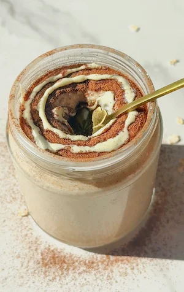

Cinnamon Roll Overnight Oats (Blended) (smooth, dreamy 5-minute meal prep breakfast)
if you love the cozy flavours of a cinnamon roll but want something you can actually eat for breakfast every single day without any guilt, these blended cinnamon roll overnight oats are about to become your new best friend. they have all the warm, spiced sweetness you crave, but in a form that's genuinely nourishing, refined sugar free, and takes just five minutes to prep the night before.
the blending technique is really what makes this recipe so special. if you've ever tried traditional overnight oats and found the texture too thick, too chewy, or just not your thing, this version completely solves that. blending the oats transforms the whole bowl into something smooth, creamy, and spoonable, somewhere between a pudding and a cinnamon roll batter, without the heaviness of either.
oats are one of my favourite breakfast ingredients because they're genuinely so good for you. they're rich in beta-glucan, a type of soluble fibre that supports heart health, helps regulate blood sugar levels, and keeps you feeling full for hours. that means these cinnamon roll overnight oats aren't just a tasty breakfast, they're also a really balanced way to start your day with steady, sustained energy.
the dates add a gentle natural sweetness and are also packed with fibre, iron, and potassium. they blend completely smooth so you'd never know they're in there, and they sweeten the oats in a way that feels rich and caramel-like without any refined sugar. cinnamon works beautifully in this recipe too, not just for flavour but because it's often associated with helping support balanced blood sugar levels, which pairs perfectly with the natural sugars from the dates and maple syrup.
this is one of those recipes you can prep on sunday evening and have four days of easy breakfasts ready to go. it's completely vegan, dairy free, and gluten free if you use certified gluten free oats. i love topping mine with a swirl of white chocolate or yogurt and an extra pinch of cinnamon, but honestly it's just as delicious straight from the jar.
if mornings feel rushed and you're always skipping breakfast or defaulting to something less nourishing, this recipe is genuinely one of the easiest solutions. the fridge does all the work overnight, and morning you just need to grab the jar.
Cinnamon Roll Overnight Oats (Blended)

Ingredients
Instructions
- Step 1: Add all of the ingredients to a high power blender.
- Step 2: Blend until the oats are completely smooth.
- Step 3: Add in a few extra tablespoons of milk if you prefer a runnier texture and blend again.
- Step 4: Transfer to an airtight container and place in the fridge overnight.
- Step 5: Enjoy!
Pro Tips
- Add your favourite protein powder to the blender for a high protein version. You may need a splash of extra milk depending on the absorbency of your powder.
- If the texture is too thick after chilling, stir in a tablespoon of milk at a time until you reach your ideal consistency. It naturally thickens overnight.
- Make up to 4 servings at once by multiplying all ingredients. Store each portion in its own jar for grab-and-go breakfasts throughout the week.
- For the best cinnamon roll experience, top with a swirl of melted white chocolate or a dollop of yogurt and a generous pinch of extra cinnamon just before serving.
Frequently Asked Questions
How do I store blended cinnamon roll overnight oats?
Store in an airtight jar or container in the refrigerator for up to 4 days, making these perfect for weekly meal prep. If the oats thicken overnight (which is totally normal), just stir in a splash of your milk of choice before eating to loosen the texture back up.
What type of oats should I use?
Rolled oats or porridge oats work best for blended overnight oats as they blend smoothly and absorb milk well overnight. Steel cut oats are not ideal for this recipe because they remain too firm and don't blend to the same creamy consistency.
Are cinnamon roll overnight oats gluten free?
Oats are naturally gluten free, but cross-contamination can occur during processing if the oats aren't certified gluten free. If you need this recipe to be strictly gluten free, such as for coeliac disease, make sure to use a certified gluten free oat brand.
Can I make high protein overnight oats?
Yes, this is a great recipe for adding protein powder. Add your favourite vanilla or unflavoured protein powder to the blender with the other ingredients. You'll likely need to add a little extra milk depending on how absorbent your protein powder is, as it can thicken the oats significantly.
Why are these overnight oats blended?
Blending overnight oats creates a completely smooth, pudding-like texture that's very different from the typical thick, chewy consistency of regular overnight oats. It makes the flavours more uniform throughout and gives the whole thing a much creamier feel. It's a total game changer if you've never loved the texture of traditional overnight oats.
What topping works best with cinnamon roll overnight oats?
I used white chocolate for a subtle extra sweetness and that cinnamon roll aesthetic. Greek or coconut yogurt swirled on top is also a great option and adds extra protein. A dusting of cinnamon and a drizzle of maple syrup always works too. Keep it simple or dress it up, both ways are delicious.
Can I eat these overnight oats warm?
Yes! If you prefer a warm breakfast, you can transfer the oats to a saucepan and gently heat them on the stovetop with a splash of extra milk, stirring as you go. Alternatively, microwave them in a microwave-safe jar for about 60 to 90 seconds, stirring halfway through. They're cozy and delicious warm too.
Can I make these overnight oats without dates?
Yes, if you don't have dates or prefer not to use them, you can simply increase the maple syrup to 2 to 3 tablespoons to compensate for the sweetness and binding the dates provide. The texture will be slightly less thick but still really creamy once blended.
Nutrition Facts
Per one serving:
*Nutritional information is estimated and will vary depending on the ingredients and brands you use. Basic macros don't reflect the full nutritional value including vitamins, minerals, antioxidants, and other beneficial compounds. Please use this as a guideline only.